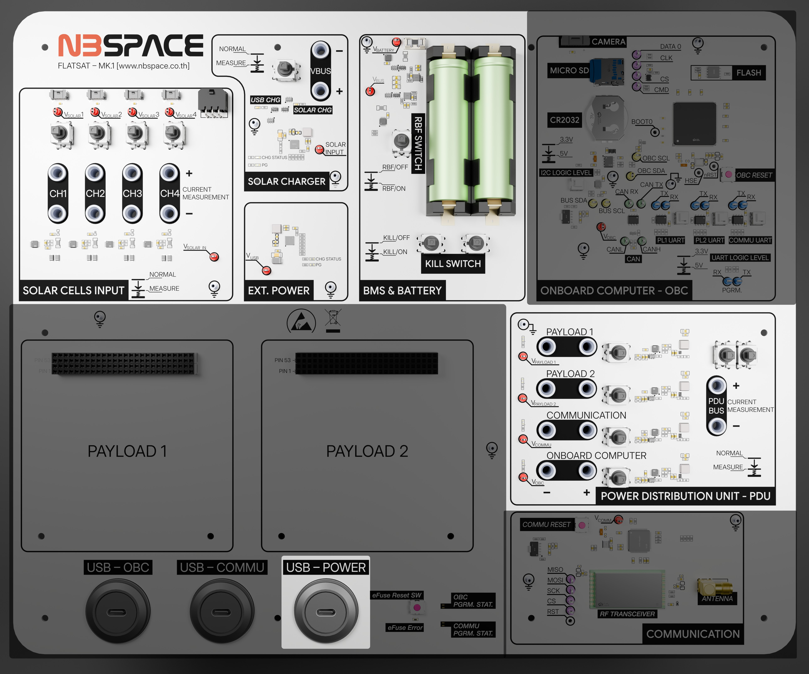
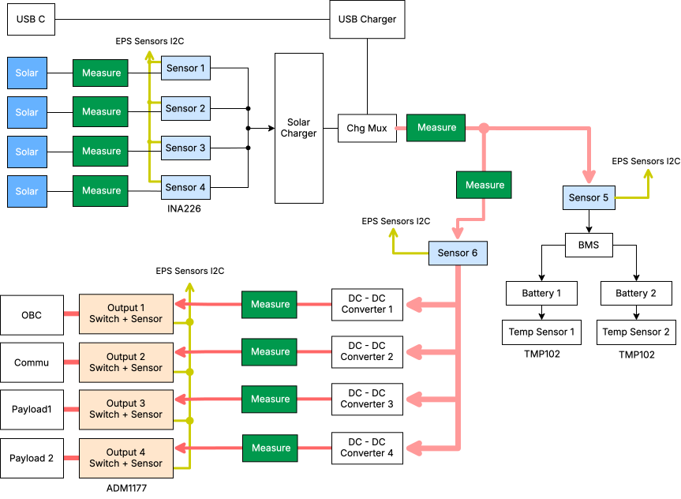

Electrical Power System (EPS) Subsystem
The Electrical Power System (EPS) is the vital heart of the FlatSat, responsible for harvesting energy from solar sources, storing it in high-capacity batteries, and distributing regulated power to all other satellite modules.
A unique architectural feature of this kit is that the EPS is centrally managed. It does not have its own dedicated microcontroller; instead, the On-Board Computer (OBC) acts as the "brains" of the EPS, communicating with a network of sensors and switches via a dedicated I2C bus (SDA: PF0, SCL: PF1).

Key Capabilities and Features
1. Energy Harvesting and Storage
- Battery Power: Equipped with a Li-ion 18650 battery pack providing at least 17 Wh of energy.
- Solar Input: Supports up to four solar panel inputs, featuring a simulation system to mimic orbital sunlight conditions.
- Charging Management: Integrated chargers (BQ25606) manage both USB-C and Solar charging paths efficiently.
2. Intelligent Power Distribution
The EPS features three controllable primary output channels, each equipped with an ADM1177 hot-swap controller and sensor. To ensure system stability, the channel that controls the OBC itself is intentionally omitted from the board, preventing the OBC from accidentally turning itself off. This allows the OBC to independently toggle power to the following subsystems using specific pins:
- Communication Subsystem (Pin: PD1)
- Payload 1 / GPS (Pin: PD2)
- Payload 2 / Expansion/PC104 (Pin: PD3)
3. Hardware Testing and Diagnostics
For benchtop testing and debugging, the EPS board provides physical access points:
- Test Points: Dedicated test points are available to easily hook up oscilloscope probes for signal monitoring.
- Current Measurement: The board includes banana jacks. When the designated switch is pushed down, you can connect an external amp meter directly via these jacks to measure the current draw of the power bus.
4. Comprehensive Telemetry
The subsystem is densely populated with sensors to provide real-time health data:
- Current and Voltage: Six INA226 sensors monitor the performance of solar inputs and main power rails.
- Temperature Monitoring: Dual TMP102 sensors track the thermal state of the battery pack to ensure safe operation.
- Direct Access: Because these sensors reside on a shared I2C bus, they can be accessed by the OBC or even custom user-modules on the PC104 bus for independent telemetry logging.
Components and Block diagram

The EPS consists of 4 + 1 Power inputs (4 For solar cells and 1 for USB) and 4 Power outputs for each subsystems in the Flatsat each attached with power voltage and current sensor for power monitoring and 2 Temperature Sensors for each battery as following table
| Label | Part No. | I2C Address | Description |
|---|---|---|---|
| Sensor 1 | INA226 | 0x40 | Solar Cell Input Channel 1 Voltage and Current Monitor |
| Sensor 2 | INA226 | 0x41 | Solar Cell Input Channel 2 Voltage and Current Monitor |
| Sensor 3 | INA226 | 0x42 | Solar Cell Input Channel 3 Voltage and Current Monitor |
| Sensor 4 | INA226 | 0x43 | Solar Cell Input Channel 4 Voltage and Current Monitor |
| Sensor 5 | INA226 | 0x47 | Battery Charging Voltage and Current Monitor |
| Sensor 6 | INA226 | 0x48 | Battery Discharging Voltage and Current Monitor |
| Output 1 | ADM1177 | 0x58 | OBC Power Switch and Voltage/Current Monitor |
| Output 2 | ADM1177 | 0x59 | Communication Power Switch and Voltage/Current Monitor |
| Output 3 | ADM1177 | 0x5A | Payload 1 Power Switch and Voltage/Current Monitor |
| Output 4 | ADM1177 | 0x5B | Payload 2 Power Switch and Voltage/Current Monitor |
| Temp Sensor 1 | TMP102 | 0x4A | Battery 1 Temperature Sensor |
| Temp Sensor 2 | TMP102 | 0x4B | Battery 2 Temperature Sensor |
Output 2,3,4 are connected to OBC's Pin PD1,PD2,PD3 Respectively
Output 1 cannot be turned off since it powers the OBC
Technical Specifications
| Feature | Specification |
|---|---|
| Control Interface | I2C (Managed by OBC) |
| I2C Pins | SDA: PF0, SCL: PF1 |
| Battery Type | Li-ion 18650 (>= 17 Wh) |
| Output Channels | 3 Controllable Channels (ADM1177) |
| Sensors | INA226 (Power), TMP102 (Temp) |
| Solar Inputs | 4 Channels with individual measurement |
Example Code
These examples demonstrate how the OBC interacts with the EPS hardware. You can use these to learn how to read power telemetry and control the satellite's power rails.
| Feature | Description | Code Link |
|---|---|---|
| Read EPS Data | Comprehensive driver to read voltage, current, and temperature from all EPS sensors. | obc_read_eps.ino |
| Power Channel Control | Toggle the three primary power output switches (PD1–PD3). | obc_power_control.ino |
| I2C Bus Scan | Scan the EPS-specific I2C bus to verify all sensors and controllers are online. | obc_eps_i2c_scan.ino |
Educational Tip: When writing your flight software, it is best practice to periodically check the battery temperature and voltage levels to trigger "Safe Mode" if the satellite's power reserves are low.